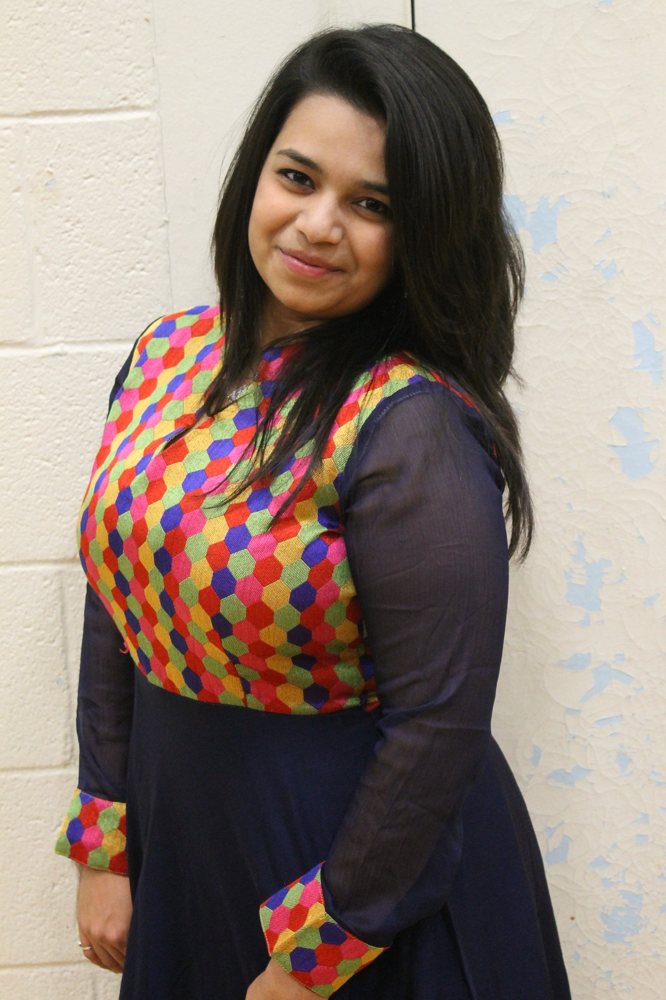

About Me

Hi! I am Shaili Shah. Currently I am in life changing adventure, trying to become a successful full stack developer. I have studied computer science and by profession, I am a Quality Assurance Lead.
After investing 4 years of my life, having detailed knowledge in Payment services (EMV/ISO8583), Quality assurance, certification and application support & operations. I take deep pride in representing the QA Team & love leading.
With an immense & intense knowledge of QA best practices & Team management abilities, I’m concentrating to excel my technical skills and sharpen my knowledge in languages that the machine can understand. I believe developing is a worse addiction and I am already addicted to it.